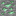

Урановая руда
alaindustrial:uranium_ore
Сводка
Уран — рудный материал ядерного трека мода (РИТЭГ / реактор). Решение проекта: руда добавляется в генерацию мира сразу , а потребитель (обогащение/реактор/РИТЭГ) приходит То есть руда спавнится и копится, но применения в текущих фазах не имеет. Параметры worldgen зафиксированы как, Acquisition path реализован по аналогии с /tin: руда добывается киркой в raw_uranium (Fortune-масштабируемый дроп, ×2–5 по ванильной схеме copper_ore), Silk Touch даёт сам блок руды. Формы (raw/пыль/слиток) и рецепты переработки реализованы по общей конвенции металлов (см. tin.md как эталон: плавка raw_uranium/руды → слиток (печь, 1:1) или дробление → 2 пыли → 2 слитка) — при этом ядерный потребитель (обогащение/реактор/РИТЭГ) по-прежнему Семейство block_id (реализовано, потребитель — ):
| block_id | Форма | Получение |
|---|---|---|
alaindustrial:uranium_ore | Руда в камне | worldgen (size 4, count 1, Y −64…16, discard 0.5); кирка → raw_uranium (Fortune), Silk Touch → сам блок |
alaindustrial:deepslate_uranium_ore | Руда в глубосланце | worldgen (y < 0); кирка → raw_uranium (Fortune), Silk Touch → сам блок |
alaindustrial:raw_uranium | Сырьё | дроп руды киркой; плавится в слиток (печь/электропечь) |
alaindustrial:uranium_dust | Пыль | дробление руды/raw_uranium (×2, по конвенции) |
alaindustrial:uranium_ingot | Слиток | плавка raw_uranium/руды (печь, 1:1) или пыли (по конвенции) |
Используется мод-слиток alaindustrial:uranium_ingot (ванильного урана нет).
Энергия
| Поле | Значение |
|---|---|
| Роль | none (материал без энергии) |
Генерация в мире
Уран добавляется в генерацию мира сразу (решение: руда спавнится , применение — позже с ядеркой). Числа ниже —**, из
⚠️ НЕ выведены из спроса. У остальных руд count/ρ считаются из потребления (рецепты → слитков до вехи). У урана потребителя нет (реакторы/РИТЭГ вне scope), поэтому вывести число не из чего — оно задано «на ощущение редкости» по образцу ванильного алмаза, а не рассчитано. Это осознанный выбор: пусть руда генерится и копится, а баланс уточнится, когда придёт ядерный спрос. Числа помечены до тех пор.
| Параметр | Значение | Обоснование |
|---|---|---|
| Тир редкости | rare (endgame) | редчайший металл, эталон — алмаз (model §5) |
Размер жилы size | 4 (B_max=5,) | крошечные жилы — редкость по объёму |
Жил на чанк count | 1 | ~×7 реже алмаза (алмаз count=7); цель «≥×5 реже» |
Air-discard d | 0.5 | как алмаз — теряется при экспозиции |
| Target-пары | stone_ore_replaceables + deepslate_ore_replaceables | две target — стандарт |
Biome стартовый , пересчитать по supply≈demand при появлении ядерного потребителя.
Свойства блока
| Поле | Значение |
|---|---|
| Форма | Полный куб 16³ |
| Взрывоустойчивость | 3.0 (как ванильные руды) |
| Дроп | raw_uranium ×1 (Fortune множит; Silk Touch → сам блок), loot table blocks/uranium_ore.json + deepslate |
Форма/коллизия — полный куб как у прочих рудных блоков.
Рецепты
Реализовано по общей конвенции материалов (см. Олово как структурный образец), acquisition/переработка форм готовы; ядерный потребитель (обогащение/реактор/РИТЭГ) остаётся : Печь/электропечь, raw → слиток (основной путь): minecraft:smelting/blasting, recipe/uranium_ingot_from_smelting_raw_uranium.json + _blasting_ вариант; электропечь — recipe/smelting/raw_uranium.json (energy: 200) — аналог raw_copper/raw_iron. Печь/электропечь, ore → слиток (сохранено, паритет с ванильной медью): recipe/uranium_ingot_from_smelting_uranium_ore.json + deepslate/_blasting_ варианты, без удвоения (образец: tin.md, реализовано в. Дробление руды/raw_uranium → пыль (×2): maceration/uranium.json (energy: 300 — фиксированная Дробление слитка → пыль (×1): maceration/uranium_ingot.json (energy: 300, count:1 — слиток (Fortune-масштабируемый), Silk Touch → сам блок; ванильная схема (как copper_ore). Удвоение руды эмерджентно: 1 руда/raw_uranium → дробление → 2 пыли → плавка → 2 слитка; путь без
Прогрессия
Тир: none (материал). Ведёт в: ядерный -трек (обогащение / РИТЭГ / реактор). В текущих фазах потребителя Единственная внешняя привязка урана — строка бенчмарк-таблицы Immersive Engineering (Blue Ice + Uranium = максимальный выход термоэлектрического генератора, Это бенчмарк-ориентир, а не фича мода и не consumer урана. Требует: работающий Дробитель и печь — только если/когда формы будут введены.
Совместимость
Просмотрщики: JEI, REI, EMI (руда/сырьё/пыль/слиток — когда формы появятся). Теги (заготовка): c:ores/uranium, c:raw_materials/uranium, c:dusts/uranium, c:ingots/uranium — кросс-мод совместимость.
Баланс
Уран не участвует в текущем экономическом балансе: у него нет потребителя в активных фазах Acquisition path (руда → raw → пыль → слиток) реализован по общим конвенциям переработки: дробление energy: 300 (150 тиков; Worldgen-числа — (diamond-anchored, не из спроса, см. «Генерация в мире»); проектный баланс урана уточнится, когда придёт ядерный спрос. а не балансная цель этого мода.
Связанное
Олово — структурный образец материала-руды (конвенции форм/рецептов). material_forms.md — общее семейство форм (пыль/пластина/слиток). Дробитель — даёт пыль (удвоение), если формы введут. Серебро, Никель.
Используется в
Доменная печь
→
Урановый слиток
Плавка (печь)
→
Урановый слиток